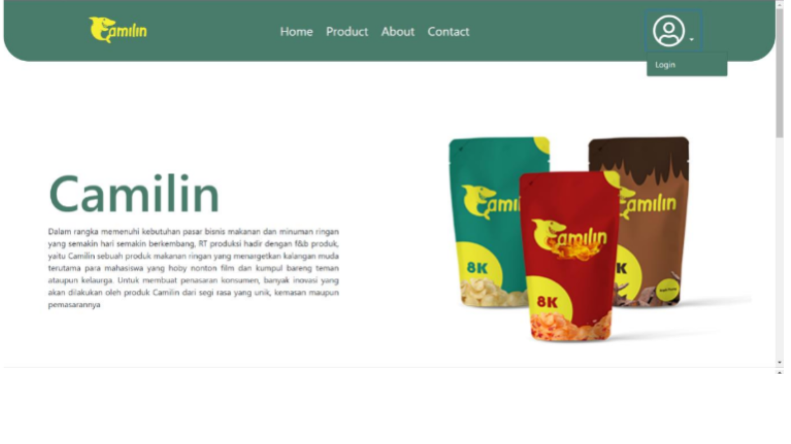
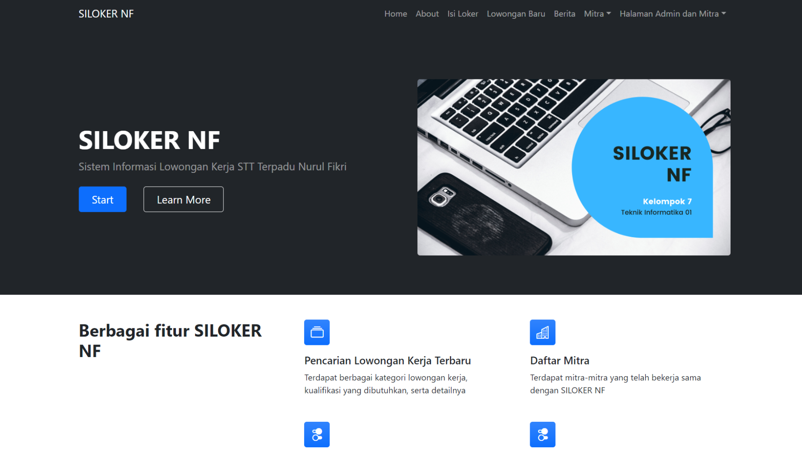

Portfolio
Prevent!
Back End Team
Prevent! is an application that can be used to consult about mental health online with a psychologist.
Tech Stack:
Go
Echo
GORM
MySQL
Docker
Postman
Git
AWS S3
GCP
Apotek Online
Back End Developer
Apotek Online is an API for a pharmacy web application that can provide convenience for customers who want to buy medicines without having to leave the house.
Tech Stack:
Go
Echo
GORM
MySQL
Docker
Postman
Git
AWS EC2
AWS RDS
AWS S3

Camilin
Front End Developer
Camilin is an F&B product website that provides snacks targeting young people.
Tech Stack:
HTML
CSS
JavaScript
Bootstrap
jQuery
Git
Netlify

Siloker NF
Full Stack Team
Siloker NF is a web application for searching for job vacancies.
Tech Stack:
HTML
CSS
JavaScript
PHP
Bootstrap
jQuery
CodeIgniter
MySQL
Git
Netlify